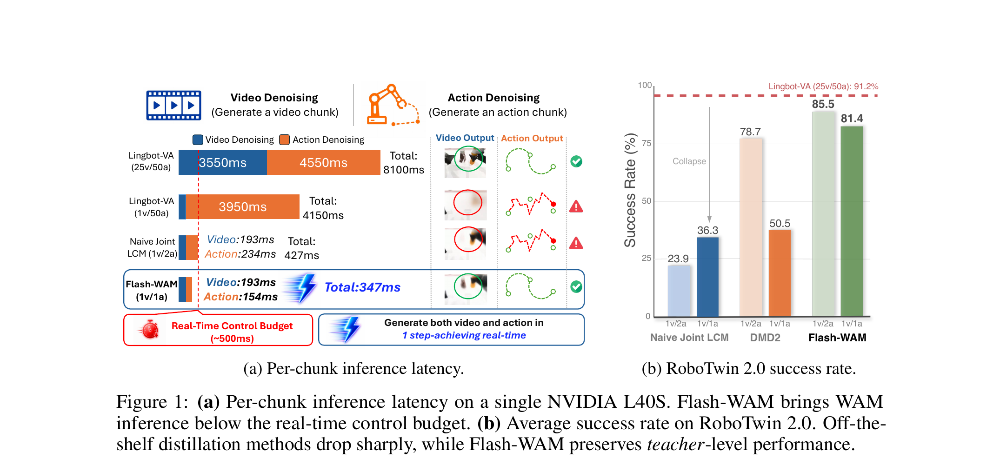
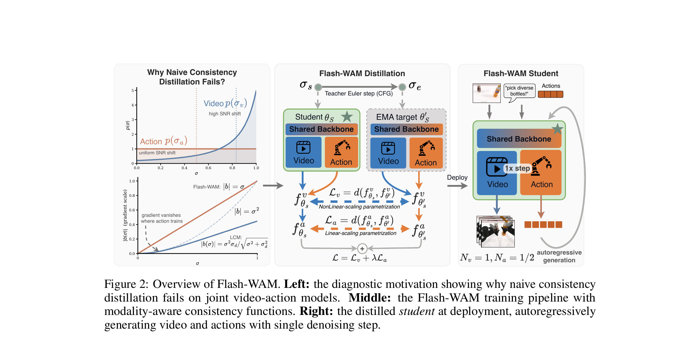
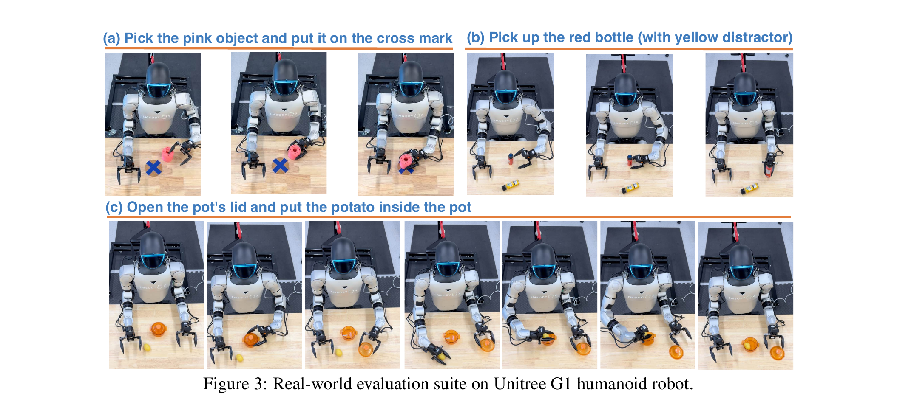
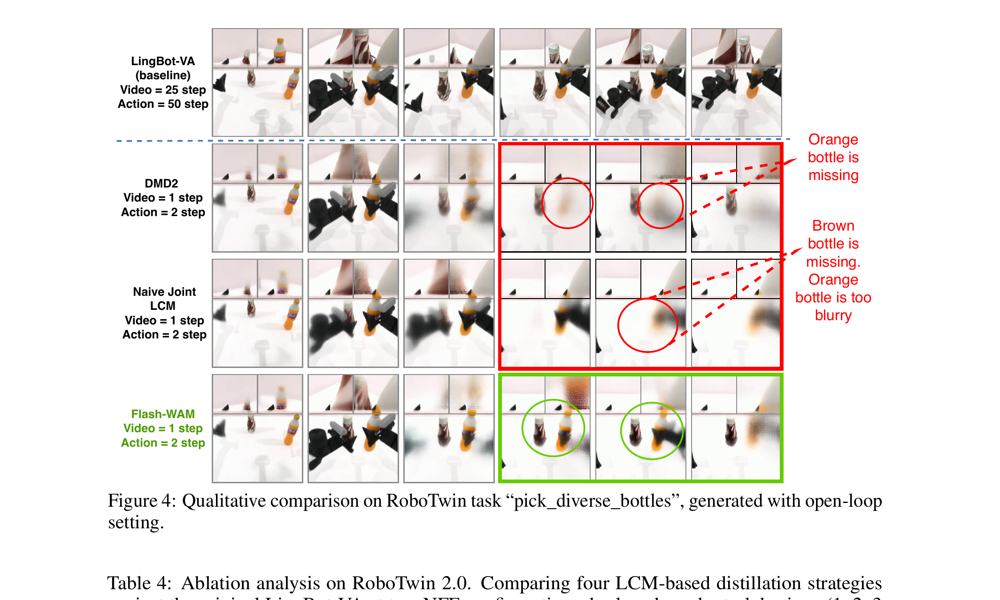

Flash-WAM：为什么视频与动作不能共用一种蒸馏函数
Flash-WAM 的核心不是简单“把 75 次去噪压成 2 次”，而是先证明：视频流与动作流因为使用不同的 SNR-shift schedule，抵达蒸馏损失时处在不同噪声区间；标准 LCM 的梯度系数在动作常见的低噪声区间按 $\sigma^2$ 消失，因此必须给动作换成按 $\sigma$ 线性缩放的 consistency function，同时保留视频侧在高噪声区间更稳定的 variance-preserving 参数化。
问题先立住：WAM 很强，但一个动作块要等 8.1 秒
先不要急着看蒸馏公式。必须先弄清 Flash-WAM 加速的对象是什么、为什么“直接减少采样步数”不成立，以及论文所谓实时到底采用什么口径。下一节再补齐 Flow Matching 和 consistency distillation 的必要地基。
1.1 WAM 的推理不是一次前向，而是两段串行 ODE 积分
LingBot-VA 先用视频流生成未来视觉 latent，再在这个未来上用动作流生成 action chunk。论文使用的教师在 RoboTwin 上需要 $N^v=25$ 次视频网络评估和 $N^a=50$ 次动作网络评估：视频约 3550 ms，动作约 4550 ms，合计 8100 ms。两段不是可随意并行的独立头，因为动作分布以生成的视频为条件。
- $C$
- 过去的观测、过去动作与语言指令组成的上下文；不是只给一张当前图。
- $x^v$
- 未来视频 latent。它先回答“接下来世界可能怎样变化”。
- $x^a$
- 与该未来一致的动作序列。它回答“什么动作会导致这个未来”。
- $N^v+N^a$
- 每个 chunk 的串行 Transformer 前向次数。减少 NFE 是加速来源，但只删步会让数值积分偏离训练好的流场。
1.2 论文把 500 ms 定义为实时预算
作者在单张 NVIDIA L40S、单 chunk 口径下测量延迟，并采用 500 ms，即 2 Hz chunk-level rate 作为实时门槛。Flash-WAM 的 1v/1a 配置达到 348 ms；因此“实时”指动作块每秒约更新两次，不等同于低层关节控制回路的几百 Hz。

1.3 Introduction 的逻辑链：为什么不是再做一个 VLA，也不是只做工程缓存
第一层动机是表示：直接 VLA 从当前视觉和语言映射动作，跨任务能力强，但其视觉表征大多来自静态图文预训练，并不显式刻画“动作之后世界会怎样变化”。WAM 从大规模视频生成骨干继承时空先验，先预测未来视觉，再反推动作，因此作者把它视为更有希望的通用机器人基座。Flash-WAM 不试图重新证明 WAM 一定优于 VLA；它接受这个表示路线，然后解决其最明显的部署代价。
第二层动机是系统：现有 WAM 已使用 KV cache、noisy-history augmentation、预测与执行异步流水线来降低 wall-clock latency，但这些方法没有消除底层的 25 次视频去噪与 50 次动作去噪。缓存解决“别重复算过去”，Flash-WAM 解决“当前 chunk 为什么仍要沿 ODE 走几十个小步”，两者正交而非互斥。
第三层动机是算法缺口：图像/视频扩散已有大量 step distillation，最自然的想法是直接搬到 WAM。可 progressive distillation 要多阶段反复减半，难以扩展到大基座；DMD2 一类 distribution matching 需要辅助 score network 与对抗式训练，和视频/动作不对称 schedule 的联合训练不自然；consistency distillation 最干净，却在直接迁移时把 RoboTwin 成功率从 91% 降到约 24%。于是论文真正的问题不是“能否蒸馏”，而是“为什么单模态蒸馏理论在联合视频—动作上失效”。
1.4 Related Work 不是论文名单：四条竞争路线各自在删除什么
| 相关路线 | 代表工作 | 已经解决什么 | Flash-WAM 认为仍缺什么 |
|---|---|---|---|
| 统一 World-Action Model | LingBot-VA、Motus、DreamZero | 用共享骨干、Mixture-of-Transformers 或架构级优化耦合视频与动作生成 | 两条生成流仍受迭代去噪支配；不同架构还不能共享一套现成加速结论 |
| 不在测试时显式生成视频 | GigaWorld-Policy、Fast-WAM | 把未来动态变成因果 reasoning signal，或把 video DiT 改作单次动作编码器 | 速度快，但删掉了显式未来视频；Flash-WAM 选择保留原 WAM 的可视未来与两阶段结构 |
| Trajectory-following distillation | Progressive Distillation、Consistency Models、LCM | 让学生沿 teacher ODE 轨迹或从任一点预测同一端点，通常不需额外判别器 | 原方法假设单模态、单噪声分布；没有处理视频与动作 schedule 不对称 |
| Distribution-matching distillation | DMD、DMD2 | 不逐点追随轨迹，而让少步学生的输出分布匹配 teacher | 需要辅助 score/adversarial 组件；动作流还要额外 flow-matching regularizer 才稳定 |
如果目标只是更快，Fast-WAM 的“取消测试时视频生成”更激进；如果目标只是保留画质，视频蒸馏已有成熟方法。Flash-WAM 值得单独做，是因为它要同时满足三个约束：保留显式未来、保留联合动作生成、又把两种不同噪声 regime 的多步采样一起压缩。这个交集此前没有被单模态蒸馏覆盖。
展开原文 · 论文声称的系统结果
“This reduces per-chunk latency from 8.1 seconds to 348 ms on NVIDIA L40S, a 23× speedup that enables real-time inference.”
地基：Flow Matching 学速度场，Consistency 学“从轨迹任一点直达终点”
上一节说明了为什么要减少积分步数。本节解释被压缩的多步生成究竟在算什么。理解两个对象就够了：Flow Matching 的速度场 $v_\theta$，以及把 ODE 轨迹任一点映到同一干净端点的 consistency function $f$。
2.1 Flow Matching：从数据到噪声之间画一条直线路径
- $x_0$ 与 $\epsilon$
- $x_0$ 是干净视频 latent 或动作序列，$\epsilon$ 是同形状高斯噪声。
- $\sigma\in[0,1]$
- $\sigma=0$ 是数据端，$\sigma=1$ 是纯噪声端；推理时从 1 数值积分回 0。
- $\epsilon-x_0$
- 因为路径是直线，它对 $\sigma$ 的导数是常数。网络被训练来预测当前位置应沿哪个方向移动。
- $\hat x_0=x_\sigma-\sigma v_\theta$
- 若速度预测准确，从当前点沿直线走回长度 $\sigma$ 就能估计干净端点。这也预告了动作侧的线性 consistency 形式。
2.2 SNR shift：同样均匀采样 $\tilde\sigma$，可以把训练质量推向高噪声端
- $\tilde\sigma$
- 原始均匀变量；它本身没有偏向低噪声或高噪声。
- $s$
- shift 越大，映射后的 $\sigma$ 越集中在 1 附近。附录给出的实现是视频 $s_v=5.0$、动作 $s_a=1.0$。
- 为什么视频用更大 shift
- 高维视频 latent 有强空间冗余，对单步强噪声更耐受；训练更多落在高噪声区，有助于学习从粗结构恢复画面。
- 为什么动作不照搬
- 动作维度低、数值精度直接决定接触与轨迹。$s_a=1$ 让大量训练样本保留在低 $\sigma$ 区间。
2.3 Consistency Distillation：学生和 EMA 目标要对同一 ODE 轨迹给出相同终点
- $a(\sigma)$
- 保留当前 noisy sample 的 skip 系数。
- $b(\sigma)$
- 把网络预测的速度写入输出的系数；它也直接缩放损失传给 $v_\theta$ 的梯度。
- 边界条件
- 在 $\sigma=0$ 时必须有 $f(x_0,0)=x_0$。因此 $a(0)=1$、$b(0)=0$ 不是可随意调的超参数。
- “一致”是什么意思
- 同一条 teacher ODE 轨迹上的 $x_{\sigma_s}$ 与 $\tilde x_{\sigma_e}$ 虽然噪声不同，经 $f$ 后应指向同一干净端点。
- $\sigma_s$ 与 $\sigma_e$
- 起始噪声和 teacher 向数据端推进后的噪声，满足 $\sigma_e<\sigma_s$。
- $\hat v_{cfg}$
- 冻结 teacher 的 classifier-free guided 速度；它提供局部 ODE 方向，而不是直接作为硬标签输出整条轨迹。
- $\theta_S$ 与 $\theta'_S$
- 在线学生与其 EMA 目标。目标分支 stop-gradient，EMA 降低自蒸馏目标的抖动。
- $d(\cdot,\cdot)$
- 距离度量。损失要求两个噪声点的终点预测一致，使学生最终可以跨越原来的许多小步。
核心诊断：标准 LCM 在动作最常训练的地方几乎不给梯度
一般 consistency function 看起来已经能同时用于两种模态，问题出在 $b(\sigma)$。它不只是输出系数，也是梯度闸门。视频和动作的 $\sigma$ 边际分布不同，同一个闸门会在视频区间打开、在动作区间关闭。
3.1 先区分“条件不同”与“训练噪声分布不同”
论文并不是说视频和动作因为语义不同就一定要两个损失头；它给出了更具体的结构性条件：$s_v>s_a$。视频样本集中在较高 $\sigma$，动作样本横跨整个区间并在低 $\sigma$ 有显著质量。统一使用 LCM 时，两个流看到的是同一个函数，却在完全不同的位置调用它。
- $s_v>s_a$
- 实验实现为 $5.0>1.0$。视频蒸馏样本大多落在高噪声区，动作则频繁落在低噪声区。
- $b_{LCM}(0)=0$
- 满足 consistency 的边界条件，但这只保证终点正确，不保证终点附近有足够训练信号。
- $b'_{LCM}(0)=0$
- 一阶项也消失，所以最先出现的是 $\sigma^2$。当 $\sigma$ 从 0.2 变到 0.1，梯度尺度大致再缩小四倍，不是两倍。
- 36× 差距
- 论文在 $\sigma=0.1$ 观察到 LCM 梯度尺度约比视频所在高噪声区小 36 倍。即使速度预测很差，动作头也可能收不到足够纠正信号。
3.2 命题 1：边界条件允许的最好低噪声缩放只能是线性
- 为什么上界是线性
- 边界条件强制 $b(0)=0$。对可微函数在 0 点做 Taylor 展开，第一项只能从 $b'(0)\sigma$ 开始，不可能保留常数梯度。
- 何时退化成二次
- 如果再令 $b'(0)=0$，线性项也被抹掉，只剩 $O(\sigma^2)$ 或更高阶。标准 LCM 正好处于这个次优情形。
- 为什么调 $\sigma_d$ 救不了
- 任意 $\sigma_d$ 下，LCM 家族都满足 $|b_{LCM}(\sigma)|\le\sigma$，且在零点仍是二次消失；改变数据尺度只能改常数，不能改变阶数。
- 命题的真正用途
- 它把“动作蒸馏不稳定”从经验超参问题变成函数族选择问题：要在低噪声区学习，必须离开 $b'(0)=0$ 的 LCM 形式。

1. 先统计两种模态实际抵达损失的噪声区间
不是从“视频复杂、动作简单”的直觉出发，而是从 $s_v=5,s_a=1$ 导出的边际 $\sigma$ 分布出发。
输入是什么：已经训练好的模型、它在不同输入或噪声时间步上的运行记录，以及需要比较的中间数值。这里先做诊断，还没有让机器人执行新动作。
这一步究竟做什么：不是从“视频复杂、动作简单”的直觉出发，而是从 $s_v=5,s_a=1$ 导出的边际 $\sigma$ 分布出发。
输出到哪里：一组诊断数值、分类结果或评测分数；它告诉后续模块当前结果哪里好、哪里需要修正。这个结果会交给下一步“检查 consistency function 的梯度系数”继续处理。
为什么不能省略：没有统一诊断或评分，后续模块无法知道哪里出错，也无法公平比较两个模型是否真的进步。
2. 检查 consistency function 的梯度系数
因为 $\partial f/\partial\theta$ 含有 $b(\sigma)$，标准 LCM 在低 $\sigma$ 区给动作的学习信号二次衰减。
输入是什么：来自上一步“先统计两种模态实际抵达损失的噪声区间”的产物：一组诊断数值、分类结果或评测分数；它告诉后续模块当前结果哪里好、哪里需要修正。本步骤还会按论文设置读取当前条件、时间步或训练信号。
这一步究竟做什么：因为 $\partial f/\partial\theta$ 含有 $b(\sigma)$，标准 LCM 在低 $\sigma$ 区给动作的学习信号二次衰减。
输出到哪里：一组诊断数值、分类结果或评测分数；它告诉后续模块当前结果哪里好、哪里需要修正。这个结果会交给下一步“Teacher 仍提供局部 ODE 轨迹”继续处理。
为什么不能省略：没有统一诊断或评分，后续模块无法知道哪里出错，也无法公平比较两个模型是否真的进步。
3. Teacher 仍提供局部 ODE 轨迹
Flash-WAM 没有重新训练世界模型；它从已训练 LingBot-VA 的 guided Euler step 构造蒸馏配对。
输入是什么：来自上一步“检查 consistency function 的梯度系数”的产物：一组诊断数值、分类结果或评测分数；它告诉后续模块当前结果哪里好、哪里需要修正。本步骤还会按论文设置读取当前条件、时间步或训练信号。
这一步究竟做什么：Flash-WAM 没有重新训练世界模型；它从已训练 LingBot-VA 的 guided Euler step 构造蒸馏配对。
输出到哪里：一个或多个候选未来、动作或轨迹，以及必要的中间状态。这个结果会交给下一步“同一共享骨干，两个 consistency 映射”继续处理。
为什么不能省略：它承担上下两步之间的接口；缺少它，前一步产生的信息无法以正确格式或正确含义传到下一步。
4. 同一共享骨干，两个 consistency 映射
视频选择高噪声稳定的 Karras/LCM 形式，动作选择达到线性梯度上界的 $x_\sigma-\sigma v_\theta$。
输入是什么：来自上一步“Teacher 仍提供局部 ODE 轨迹”的产物：一个或多个候选未来、动作或轨迹，以及必要的中间状态。本步骤还会按论文设置读取当前条件、时间步或训练信号。
这一步究竟做什么：视频选择高噪声稳定的 Karras/LCM 形式，动作选择达到线性梯度上界的 $x_\sigma-\sigma v_\theta$。
输出到哪里：参数得到更新的模型，或能供下一轮训练使用的新监督信号。这个结果会交给下一步“部署仍保持 WAM 因果顺序”继续处理。
为什么不能省略：它承担上下两步之间的接口；缺少它，前一步产生的信息无法以正确格式或正确含义传到下一步。
5. 部署仍保持 WAM 因果顺序
一次生成未来视频，再一次生成动作；“一步”是每个模态一步，不是同时无条件吐出两者。
输入是什么：来自上一步“同一共享骨干，两个 consistency 映射”的产物：参数得到更新的模型，或能供下一轮训练使用的新监督信号。本步骤还会按论文设置读取当前条件、时间步或训练信号。
这一步究竟做什么：本步骤执行“部署仍保持 WAM 因果顺序”。具体来说，一次生成未来视频，再一次生成动作；“一步”是每个模态一步，不是同时无条件吐出两者。 模型从相同起点产生候选未来，后续模块再检查这些未来是否符合条件、物理规律或动作需要。
输出到哪里：可发送给机器人控制器的动作，以及执行后重新观测到的真实状态。这是图中这条链路的最终产物，随后会进入真实执行、模型更新或指标评测。
为什么不能省略：机器人动作会改变下一次观测；只有执行后重新读取现实，才能发现预测误差并阻止错误连续累积。
展开原文 · 结构性失败而非调参低效
“The quadratic vanishing is not specific to LCM but reflects where in the consistency-function family LCM sits.”
Flash-WAM 方法：动作要线性梯度，视频要高噪声稳定
命题 1 只告诉我们动作侧应选 $b'(0)\ne0$，还没说明视频也该使用同一种线性形式。Flash-WAM 的选择原则是“匹配模态所在的噪声区”：动作追求低噪声可学习性，视频追求高噪声方差稳定和输出有界。
4.1 动作侧：直接使用干净端点估计，达到线性缩放上界
- $a_a(\sigma)=1$
- noisy action 的 skip 路径不随噪声衰减，避免另一个随 $\sigma$ 变化的系数遮蔽速度信号。
- $b_a(\sigma)=-\sigma$
- $b'_a(0)=-1\ne0$，因此 $|b_a|=\sigma$，正好达到命题 1 允许的线性上界。
- $f^a=\hat x^a_0$
- 它等价于 Flow Matching 的 clean estimate。动作目标低维且有界，不需要视频侧那套额外方差归一化。
- 没有新超参数
- 线性形式由边界与低噪声梯度要求直接选出；不像尝试改变 $\sigma_d$ 那样只调常数而不改变消失阶数。
4.2 视频侧：保留 Karras/LCM 参数化，不追求低噪声线性梯度
- $c_{skip}$
- 低噪声时接近 1，保证边界；高噪声时衰减，避免 noisy video 直接主导输出。
- $c_{out}$
- 高噪声时趋近 $\sigma_d$，把网络输出幅度限制在数据尺度附近。
- 方差保持
- 组合后的 $\mathrm{Var}[f^v]$ 约维持在 $\sigma_d^2$，使高维视频 latent 在整个高噪声区间的数值范围稳定。
- 为什么不用动作的线性式
- $x_\sigma-\sigma v_\theta$ 在高 $\sigma$ 时会把速度预测误差乘上大系数，训练初期可能漂离视频数据流形；这对高维画面比对有界动作更危险。
4.3 联合损失：模态感知发生在 loss head，不增加单步网络成本
- $\mathcal L_v$
- 视频在线学生与视频 EMA target 的一致性距离，使用视频专属 $f^v$。
- $\mathcal L_a$
- 动作在线学生与动作 EMA target 的一致性距离，使用动作专属 $f^a$。
- $\lambda_a$
- 动作损失权重，平衡高维视频 token 与低维动作 token 对共享骨干的梯度贡献。
- 一次 forward 的含义
- 视频和动作 token 仍按预训练方式拼接并经共享 Transformer 与 flex attention；一对 teacher/student forward 同时产出两流，只在计算 target 时分开参数化。
线性 clean-estimate 和 Karras 参数化本身都不是新函数。新意在于：论文从联合 WAM 的模态不对称 schedule 出发，分析可实现梯度缩放，并给出“低噪声动作选线性、高噪声视频选 variance-preserving”的配对原则，再用联合蒸馏验证。把贡献写成“提出新的 consistency model”会夸大。
训练与部署：哪些东西变了，哪些刻意没有变
方法公式解决函数选择，但复现仍取决于 teacher、噪声采样、CFG、EMA 和联合序列如何接起来。本节把训练循环与部署循环分开，避免把“蒸馏训练的一次 forward”和“部署的一步生成”混为一谈。
5.1 一次训练迭代的可执行顺序
- 取联合样本：从机器人轨迹构造上下文 $C$、未来视频 latent $x_0^v$ 和动作块 $x_0^a$。
- 分别采噪声：视频按 $s_v=5.0$，动作按 $s_a=1.0$ 变换噪声级；两条流不共享同一个边际 $\sigma$ 分布。
- 构造 teacher 邻点：冻结 LingBot-VA teacher。视频 teacher Euler step 使用从区间采样的 CFG 权重；动作使用 unguided prediction。
- 共享骨干前向：视频与动作 token 拼成与预训练相同的联合序列，经同一个 Transformer/flex-attention 骨干。
- 分流计算终点：视频输出套入 $f^v$，动作输出套入 $f^a$；分别对 EMA target 求距离。
- 联合更新：用 $\mathcal L_v+\lambda_a\mathcal L_a$ 更新在线学生，再更新 EMA 参数 $\theta'_S$。
5.2 这不是架构压缩：每一步的 DiT 成本没有降低
Flash-WAM 保留 LingBot-VA 的共享骨干、视频/动作 token 化方式和两阶段因果顺序。它减少的是串行调用次数，不是每次调用的参数量、attention 复杂度或 VAE 编解码成本。因此论文报告的 23.3× 小于理论 NFE 比例 $(25+50)/(1+1)=37.5×$ 是合理的：固定开销、不同阶段单步成本与系统调度都不会随 NFE 等比例消失。
| 组件 | Teacher | Flash-WAM | 是否改变 |
|---|---|---|---|
| 共享 Transformer | LingBot-VA shared backbone | 同一架构初始化的学生 | 否 |
| 视频 schedule | 高 SNR shift | $s_v=5.0$ | 边际原则保留 |
| 动作 schedule | 较低 shift | $s_a=1.0$ | 边际原则保留 |
| Consistency head | 无 | 视频 VP、动作 linear | 核心改变 |
| 推理 NFE | RoboTwin 25v/50a | 1v/2a 或 1v/1a | 核心收益 |
5.3 部署时仍然是“想象未来 → 反推动作”
一步视频学生从噪声生成未来 latent；随后一步或两步动作学生条件于该未来生成 action chunk。执行 chunk 后接收新观测，再开始下一个闭环。论文的 Figure 4 还测试了更苛刻的 open-loop autoregressive rollout，即没有中间真实观测纠偏地连续生成后续视频块，用来观察视觉误差如何累积。
若复现只在预先缓存的视频 latent 上测 348 ms，而部署系统还需在线视觉编码、VAE 解码、动作反归一化与机器人通信，就不能直接宣称端到端 348 ms。论文明确口径是 per-chunk 模型延迟；工程部署应额外报告 sensor-to-action 延迟。
实验不是一个数字：仿真验证广度，真机验证闭环，延迟验证部署
前面已经解释为什么方法应该有效。本节不只罗列 SOTA 数字，而是问每个实验排除了什么替代解释。RoboTwin 检查 50 个任务与分布偏移，LIBERO 检查常见 VLA 套件迁移，Unitree G1 检查少步误差是否真的会伤害物理接触。
6.1 评测设置：三个层级不能互相替代
| 层级 | 数据与协议 | 主要回答的问题 |
|---|---|---|
| RoboTwin 2.0 | 50 个双臂任务；Clean 固定初始化，Randomized 改物体位姿、光照与布局 | 蒸馏是否保留跨任务能力，以及对视觉分布偏移是否鲁棒 |
| LIBERO | Spatial / Object / Goal / Long-horizon；每 suite 500 demos；每 suite 微调 4000 steps，约 4×H100、24 h | 方法是否只对 LingBot 自有基准有效，还是能在标准 VLA 套件保留性能 |
| Unitree G1 | Dex1-1 gripper，3 个任务；每任务 50 条遥操作演示，每方法每任务 10 次 rollout | 少步视频/动作误差是否会转化为真实抓取、干扰物区分和长程操作失败 |
| Latency | 单 NVIDIA L40S，per-chunk；500 ms 为论文实时门槛 | 成功率保持是否伴随真实系统速度收益 |
6.2 RoboTwin：模态感知蒸馏在相同步数下显著优于通用蒸馏
| 方法 | $N^v/N^a$ | Clean | Randomized | 平均 | 速度 |
|---|---|---|---|---|---|
| LingBot-VA teacher | 25 / 50 | 91.64 | 90.86 | 91.25 | 1.0× |
| DMD2 | 1 / 2 | 85.08 | 72.36 | 78.74 | 19.0× |
| Video-only LCM | 1 / 2 | 80.66 | 76.92 | 78.79 | |
| Naive Joint LCM | 1 / 2 | 25.88 | 22.07 | 23.97 | |
| Flash-WAM | 1 / 2 | 88.42 | 82.66 | 85.54 | |
| Video-only LCM | 1 / 1 | 77.90 | 69.46 | 73.68 | 23.3× |
| Naive Joint LCM | 1 / 1 | 39.68 | 32.96 | 36.32 | |
| Flash-WAM | 1 / 1 | 82.56 | 80.26 | 81.41 |
正确归因：1v/2a 下，Flash-WAM 比 Video-only LCM 高约 6.75 个平均点，比 Naive Joint LCM 高 61.57 点。前者说明“干脆不蒸馏动作”不是最优；后者直接支持统一 consistency function 会伤害动作训练。Randomized 上 Flash-WAM 相比 DMD2 多 10.30 点，显示收益不只来自 Clean 场景的视频外观拟合。
6.3 LIBERO：损失主要集中在 Object suite，而长程并未崩塌
| 方法 | $N^v/N^a$ | Spatial | Object | Goal | Long | 平均 |
|---|---|---|---|---|---|---|
| LingBot-VA teacher | 20 / 50 | 98.5 | 99.8 | 98.0 | 98.3 | 98.6 |
| Video-only LCM | 1 / 2 | 95.1 | 92.0 | 96.0 | 97.8 | 95.2 |
| Flash-WAM | 1 / 2 | 97.0 | 92.8 | 96.4 | 98.0 | 95.7 |
| Video-only LCM | 1 / 1 | 95.0 | 91.5 | 95.0 | 95.4 | 94.2 |
| Flash-WAM | 1 / 1 | 96.0 | 92.6 | 96.0 | 95.8 | 95.1 |
1v/2a 从 6767 ms 降到 404 ms，13.7×；平均成功率从 98.6 降到 95.7。Object suite 的差距最大，提示单步生成对精细物体身份与几何关系仍更敏感。Long-horizon 的 98.0 接近教师 98.3，但不能据此推断任意长度都稳定，因为 LIBERO 长程任务长度有限，且每个 suite 单独微调。
6.4 Unitree G1：蒸馏价值在真机上比仿真更明显

| 方法 | $N^v/N^a$ | T1 | T2 | T3 | 平均 |
|---|---|---|---|---|---|
| LingBot-VA | 3 / 10 | 50% | 70% | 80% | 66.7% |
| Reduced NFE | 1 / 2 | 30% | 30% | 60% | 40.0% |
| Video-only LCM | 1 / 2 | 30% | 50% | 50% | 43.3% |
| Flash-WAM | 1 / 2 | 50% | 60% | 70% | 60.0% |
| Reduced NFE | 1 / 1 | 10% | 30% | 30% | 23.3% |
| Video-only LCM | 1 / 1 | 20% | 40% | 40% | 33.3% |
| Flash-WAM | 1 / 1 | 40% | 50% | 60% | 50.0% |
最有信息量的是 T1 的 1v/1a：只减步为 10%，Flash-WAM 为 40%。这说明 coarse integration 不是单纯让视频变模糊，而会破坏需要双手阶段配合的动作精度。不过每个单元只有 10 次 rollout，10 个百分点就是一次成功，置信区间很宽；60% 不能被解读成精确稳定的总体成功率。
展开原文 · 作者对 Figure 4 的解释边界
“We emphasize that this figure illustrates video-prediction quality only; action precision is captured quantitatively in the success-rate tables.”
消融要按反事实读：不是“蒸馏有用”，而是哪一条替代解释被排除
主表证明 Flash-WAM 更好，但不能单独证明原因是模态感知参数化。消融把四个反事实摆在相同 NFE 下：统一蒸馏、只蒸馏视频、视频蒸馏加动作正则，以及真正的两流匹配。
7.1 反事实 A：Naive Joint LCM 排除“同一种蒸馏也够用”
1v/2a 时，Naive Joint LCM 的 Clean 平均只有 25.88%，且 Horizon 2 的 Clean/Randomized 降到 4.00/3.13，Horizon 3 为 0/0。短任务偶尔成功、序列任务完全崩溃，正符合低噪声动作精修缺少梯度后误差随阶段累积的预测。
7.2 反事实 B：Video-only LCM 排除“动作根本不需要蒸馏”
Video-only LCM 通过保留动作教师，避免统一 LCM 的动作崩塌，但 1v/2a 平均仍比 Flash-WAM 低约 7 点。它说明视频单步化会改变动作所条件的未来 latent；即便动作头本身保持原形式，也需要让动作生成适应蒸馏后的联合分布。
7.3 反事实 C：加 MSE 正则排除“随便锚住动作就行”
| 方法 | NFE | H1 Clean/Rand | H2 Clean/Rand | H3 Clean/Rand | Avg Clean/Rand |
|---|---|---|---|---|---|
| Video-only LCM | 1v/2a | 87.10 / 82.73 | 73.13 / 68.19 | 62.50 / 68.25 | 80.66 / 76.92 |
| Video-only + reg. | 1v/2a | 91.53 / 88.50 | 83.00 / 74.69 | 68.00 / 62.75 | 86.92 / 82.02 |
| Naive Joint LCM | 1v/2a | 41.00 / 35.13 | 4.00 / 3.13 | 0.00 / 0.00 | 25.88 / 20.08 |
| Flash-WAM | 1v/2a | 92.30 / 88.47 | 84.88 / 76.63 | 73.50 / 63.25 | 88.42 / 82.66 |
| Video-only + reg. | 1v/1a | 66.87 / 61.07 | 39.19 / 35.56 | 10.25 / 4.75 | 53.48 / 48.40 |
| Flash-WAM | 1v/1a | 87.30 / 86.93 | 78.44 / 72.63 | 63.50 / 60.75 | 82.56 / 80.26 |
动作 MSE 正则在 1v/2a 能帮忙，但在更紧的 1v/1a 下反而比 plain Video-only LCM 的 Clean 平均低 24.42 点。原因是回归教师局部输出只能锚定某些位置，无法替代一个在整个低噪声区都有正确梯度尺度的 consistency mapping。这个反事实是论文机制最强的证据之一。
7.4 开环视频只验证“视觉身份保持”，不替代动作消融

论文没有给出“交换两种参数化”的完整 2×2：视频用 linear、动作用 VP 会怎样？也没有系统扫描 $s_v,s_a$ 来验证最优函数确实随边际噪声迁移。当前证据强力支持给动作 linear，但对“视频 VP 是唯一最佳选择”的因果力度稍弱。
放回路线：Flash-WAM 解决采样链，不解决每一步模型本身的重量
Flash-WAM 是“蒸馏式 WAM 加速”的强基线：问题定义清楚、失败机制有数学解释、仿真—真机—延迟证据闭合。但它的结论边界也很明确：目前只在 LingBot-VA shared backbone 上实例化，不能自动推广到所有联合架构，更没有把世界模型变成轻量网络。
8.1 与相邻效率路线的区别
| 路线 | 主要减少什么 | 保留什么 | 典型风险 |
|---|---|---|---|
| Flash-WAM | 视频与动作的去噪步数 | 显式未来视频、动作生成、共享骨干 | teacher 偏差被蒸馏；单步容量仍受大模型限制 |
| Fast-WAM | 测试时显式未来想象的必要性 | 训练期世界建模先验 | 若任务依赖显式未来，policy-only 路径可能失去可解释中间状态 |
| Efficient-WAM / cache | 重复层或 token 的计算 | 多步采样过程 | 环境变化导致缓存陈旧，理论 FLOPs 不等于端到端延迟 |
| DMD2 | 通过分布匹配压缩生成步数 | 视频分布层面对齐 | 联合动作流需要额外稳定器，Randomized 场景退化明显 |
8.2 论文成立的前提与尚未回答的问题
- 架构外推：Motus、DreamZero 等采用不同联合方式或自带推理优化，论文明确把它们排除在分析范围外。
- teacher 上限：蒸馏只能逼近 teacher 的 ODE 轨迹，无法修复 teacher 对新物体、错误未来或安全约束的系统偏差。
- 长程误差：RoboTwin horizon 3 与 LIBERO Long 提供初步证据，但没有分钟级持续闭环或长时间状态漂移评估。
- 真机统计量：每任务每方法 10 次 rollout 很昂贵但样本仍小；应报告多随机种子或置信区间。
- 完整延迟：论文测 per-chunk 单 L40S 模型延迟，机器人端 sensor preprocessing、通信和低层控制未拆分。
- 训练成本：减少部署 NFE 不等于廉价训练；LIBERO 每 suite 微调约需 4×H100、24 小时，蒸馏还需要 teacher forward。
8.3 最小复现清单
- 先复现 LingBot-VA teacher 的 Clean/Randomized 成功率与 25v/50a 延迟，不要从学生开始。
- 记录视频与动作各自采到的 $\sigma$ 直方图，确认 $s_v=5.0,s_a=1.0$ 确实产生论文描述的边际差异。
- 画出 $|b_{LCM}(\sigma)|$ 与 $|b_a(\sigma)|=\sigma$，并分模态记录梯度范数；只看总 loss 会掩盖动作梯度饥饿。
- 按 Naive Joint LCM → Video-only → Video-only+reg → Flash-WAM 顺序跑最小消融，固定骨干、数据、NFE 和 CFG。
- 先比较 1v/2a，再压到 1v/1a；后者能暴露正则方案在极紧动作预算下的失效。
- 延迟同时报告模型 per-chunk 与 sensor-to-action，注明 GPU、精度、batch size、VAE 是否计入。
- 真机报告每个任务原始成功次数而不只报平均百分比，并记录失败属于感知、未来预测、动作精度还是执行器。
8.4 我对这篇论文的结论
在 LingBot-VA 这种“高 shift 视频 + 低 shift 动作”的两阶段 Flow-Matching WAM 中，统一使用标准 LCM 会让动作低噪声训练信号二次消失；按模态选择 consistency function 能在相同一步/两步预算下显著恢复仿真与真机成功率，并把 per-chunk 延迟压到论文定义的实时区间。
不能据此声称所有 WAM 都应采用同一组 $f^v/f^a$，也不能把 348 ms 当作完整机器人控制延迟。真正可迁移的是选择原则：先测每个模态的噪声边际与梯度尺度，再选匹配该 regime 的 consistency 参数化。